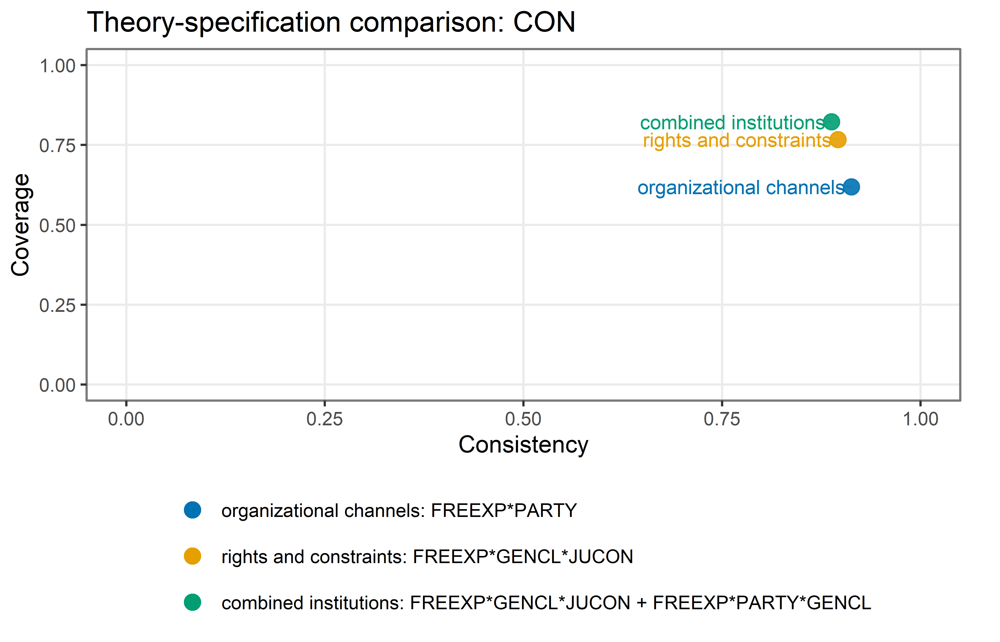

vdem_theory_specs <- list(
"organizational channels" = c("FREEXP", "PARTY"),
"rights and constraints" = c("FREEXP", "GENCL", "JUCON"),
"combined institutions" = vdem_conds
)
vdem_theory_dir_exp <- list(
"organizational channels" = c(
FREEXP = "1",
PARTY = "1"
),
"rights and constraints" = c(
FREEXP = "1",
GENCL = "1",
JUCON = "1"
),
"combined institutions" = c(
FREEXP = "1",
PARTY = "1",
GENCL = "1",
JUCON = "1"
)
)12 Theory Comparison
The preceding chapter held a single pooled solution formula fixed and examined whether its fit parameters differed across groups. We will now disturb something more fundamental, the condition set from which the truth table and solution are constructed:
If two theoretical accounts identify different conditions as relevant to robust civil society, do they produce the same sufficient terms, assign similar complete-solution memberships to the same countries, and display comparable solution consistency, solution PRI, and solution coverage when the rest of the QCA design is held constant?
For each supplied condition set, theory.test() constructs and minimizes a separate truth table while holding the calibrated outcome, cases, truth-table cutoffs, solution-selection rules, and other common analytical choices fixed, then brings the resulting solution formulas, prime implicants, solution-level parameters of fit, and complete solution memberships into a common comparison.
Despite the (perhaps overly) ambitious name, theory.test() does not calculate the probability that one theory is “more correct.” Nor does it compare an empirical solution with a formal Boolean representation of theoretical expectations. Its theories argument contains alternative condition-set specifications. It is the researcher who must establish why those specifications represent theoretically coherent accounts of the outcome.
In our civil-society application, we develop three such accounts:
Organizational channels combines membership in freedom of expression and alternative information (
FREEXP) with membership in institutionalized political parties (PARTY).Rights and constraints combines
FREEXPwith membership in women’s civil liberties (GENCL) and judicial constraints on the executive (JUCON).Combined institutions uses all four reference conditions and therefore reproduces the condition set used in the reference analysis.
These labels are shorthand for the present comparison; their theoretical standing depends on explaining why the named conditions belong together, why other conditions are absent, and which set-theoretic relations are expected.
12.1 Design the Comparison Before Running It
A defensible comparison begins by delineating alternative condition sets that correspond to genuine theoretical choices, because
theory.test()is not a battle royale in which teams of conditions clash arbitrarily until there is only one last theory standing.Removing a condition from or adding one to a theoretical specification changes the concepts represented by that specification and reorganizes the configurational space through which the cases are examined.
The required theories argument represents these alternatives as a named list of at least two nonempty character vectors of calibrated conditions. Conditions may appear in more than one specification, as FREEXP does here, but no specification may repeat a condition or include the outcome; because the entry names identify the specifications throughout the output, they should remain concise while conveying the theoretical contrast.
The number and identity of the conditions determine the logical space of each truth table. With complete = TRUE, a specification containing \(k\) conditions has \(2^k\) logically possible configurations. Removing a condition collapses configurations that differed only in that condition; adding one divides the previous configurations according to membership or nonmembership in the additional set. The 66 countries may remain unchanged, but their arrangement across configurations does not. Alternative condition sets can consequently produce different observed configurations, contradictory configurations, logical remainders, simplifying assumptions, prime implicants, and complete solution memberships.
Moreover, changes to the calibrated outcome, cases, inclusion and frequency cutoffs, solution types, or treatment of logical remainders would alter the basis of comparison and should therefore be justified rather than introduced casually. Intermediate minimization also requires directional expectations appropriate to each condition set to guide counterfactual reasoning.
12.2 Compare the Three Specifications
A single call to theory.test() constructs and minimizes a separate truth table for each specification, avoiding the need to run the smaller specifications in isolation and rerun them after adding the combined specification.
Because the comparison includes intermediate minimization, dir.exp must be a named list with one entry for every condition-set specification, attaching the directional expectations to the conditions contained in each specification. Here, "1" indicates that membership in every included condition is directionally consistent with membership in robust civil society, and the same expectation is used wherever a condition appears in more than one specification. An applied comparison must nevertheless justify the complete set of expectations attached to each theoretical account.
vdem_theory_all <- theory.test(
data = vdem_calib,
outcome = vdem_outcome,
theories = vdem_theory_specs,
incl.cut = vdem_incl_cut,
n.cut = vdem_n_cut,
solution = "all",
dir.exp = vdem_theory_dir_exp,
exclude_mode = "recompute",
exclude_recompute = list(type = 2),
which_M = 1,
i_mode = "C1P1",
complete = TRUE,
sort.by = c("incl", "n")
)All three specifications are evaluated among the same 66 calibrated countries in relation to CIVSOC, using the reference inclusion cutoff of 0.8, frequency cutoff of 2, and common solution-selection rules for conservative, parsimonious, and C1P1 intermediate minimization. For parsimonious and intermediate minimization, QCA::findRows(type = 2) is recomputed within each theory-specific truth table, so the exclusion rule—not a collection of row numbers transplanted from one configurational space to another—remains constant. In this application, the rule identifies no contradictory simplifying assumptions for exclusion in any of the three specifications.
12.2.1 Begin with the Conservative Solution Formulas
As usual, the conservative solutions provide the clearest starting point. The printed summary confirms that all nine specification–solution-type combinations succeed.
vdem_theory_all
#> <theory_test>
#> qcaERT theory-specification test
#>
#> Outcome: CIVSOC
#> Theories tested: 3
#> organizational channels: FREEXP, PARTY
#> rights and constraints: FREEXP, GENCL, JUCON
#> combined institutions: FREEXP, PARTY, GENCL, JUCON
#>
#> Solution: all
#> Monitored solutions: conservative, parsimonious, intermediate
#> which_M: 1
#> i_mode: C1P1
#>
#> Truth-table settings:
#> incl.cut: 0.8
#> n.cut: 2
#>
#> Run status:
#> organizational channels: ok
#> rights and constraints: ok
#> combined institutions: ok
#>
#> Solutions
#> theory solution_type intermediate_branch prime_implicant inclS PRI covS
#> organizational channels conservative <NA> FREEXP*PARTY 0.913 0.884 0.619
#> organizational channels parsimonious <NA> FREEXP*PARTY 0.913 0.884 0.619
#> organizational channels intermediate C1P1 FREEXP*PARTY 0.913 0.884 0.619
#> rights and constraints conservative <NA> FREEXP*GENCL*JUCON 0.896 0.873 0.767
#> rights and constraints parsimonious <NA> FREEXP*JUCON 0.897 0.874 0.786
#> rights and constraints intermediate C1P1 FREEXP*GENCL*JUCON 0.896 0.873 0.767
#> combined institutions conservative <NA> FREEXP*GENCL*JUCON 0.896 0.873 0.767
#> combined institutions conservative <NA> FREEXP*PARTY*GENCL 0.913 0.883 0.610
#> combined institutions parsimonious <NA> FREEXP*JUCON 0.897 0.874 0.786
#> combined institutions parsimonious <NA> FREEXP*PARTY 0.913 0.884 0.619
#> combined institutions intermediate C1P1 FREEXP*GENCL*JUCON 0.896 0.873 0.767
#> combined institutions intermediate C1P1 FREEXP*PARTY*GENCL 0.913 0.883 0.610
#>
#> Tables:
#> as.data.frame(x) or x$results$models: model-level diagnostics (9 rows)
#> x$results$solutions: extracted solution terms (12 rows)
#> x$results$pairwise: pairwise theory comparisons (9 rows)
#> x$diagnostics: raw per-theory solution_type diagnostics (9 rows)
#> x$by_theory: truth tables, exclusions, and minimization objectsThe three conservative solutions yield the following empirical sufficiency evidence:
subset(
vdem_theory_all$results$solutions,
solution_type == "conservative"
)
#> theory solution_type model intermediate_branch prime_implicant inclS PRI covS
#> 1 organizational channels conservative 1 <NA> FREEXP*PARTY 0.9128782 0.8836268 0.6193152
#> 4 rights and constraints conservative 1 <NA> FREEXP*GENCL*JUCON 0.8959882 0.8726954 0.7671263
#> 7 combined institutions conservative 1 <NA> FREEXP*GENCL*JUCON 0.8959882 0.8726954 0.7671263
#> 8 combined institutions conservative 1 <NA> FREEXP*PARTY*GENCL 0.9126434 0.8827231 0.6098055The organizational-channels and rights-and-constraints specifications each produce a one-term conservative solution:
\[ \text{FREEXP} * \text{PARTY} \rightarrow \text{CIVSOC} \]
for organizational channels, and
\[ \text{FREEXP} * \text{GENCL} * \text{JUCON} \rightarrow \text{CIVSOC} \]
for rights and constraints.
The combined specification instead produces the two-term solution:
\[ \text{FREEXP} * \text{GENCL} * \text{JUCON} + \text{FREEXP} * \text{PARTY} * \text{GENCL} \rightarrow \text{CIVSOC}. \]
Each record in results$solutions represents one prime implicant. inclS and PRI evaluate that prime implicant’s consistency of sufficiency and proportional reduction in inconsistency, while covS reports its raw coverage. For the two narrower specifications, the prime implicant is also the complete solution formula, so the term-level and solution-level parameters of fit are identical. The combined solution contains two prime implicants, however, and its solution-level parameters evaluate their fuzzy union rather than either term separately.
FREEXP*PARTY has consistency of sufficiency 0.913, PRI 0.884, and raw coverage 0.619. FREEXP*GENCL*JUCON has consistency 0.896, PRI 0.873, and raw coverage 0.767. Membership in the organizational prime implicant is therefore slightly more consistently contained within membership in robust civil society and is more clearly associated with CIVSOC than with ~CIVSOC. The rights-and-constraints prime implicant, however, covers considerably more outcome membership: its raw coverage is 0.148 higher.
The complete combined solution has consistency 0.888, PRI 0.859, and coverage 0.823. Adding FREEXP*PARTY*GENCL to the sufficient relation retained from rights and constraints therefore increases solution coverage by 0.056, while solution consistency falls by 0.008 and solution PRI by 0.014. Thus, the comparison shows how the three condition sets produce different sufficient subsets of CIVSOC, and deciding which condition set offers the more convincing account requires theoretical reasoning and case knowledge alongside their parameters of fit.
12.2.2 Examine the Configurational Spaces Behind the Formulas
To understand why the condition sets generate different minimized expressions, we compare each conservative formula with the configurational space from which it was derived. as.data.frame() returns one record for each condition-set specification under each monitored solution type and, where applicable, each retained intermediate branch; retaining only the conservative records places each truth table’s structure alongside the parameters of fit of its conservative solution:
vdem_theory_all_df <- as.data.frame(vdem_theory_all)
subset(
vdem_theory_all_df,
solution_type == "conservative"
)
#> theory solution_type intermediate_branch status n_conditions n_tt_rows n_observed_rows n_remainders n_excluded n_models selected_model n_terms inclS PRI covS
#> 1 organizational channels conservative <NA> ok 2 4 4 0 0 1 1 1 0.9128782 0.8836268 0.6193152
#> 4 rights and constraints conservative <NA> ok 3 8 7 1 0 1 1 1 0.8959882 0.8726954 0.7671263
#> 7 combined institutions conservative <NA> ok 4 16 11 5 0 1 1 2 0.8877605 0.8590761 0.8226760Each model-level record represents one condition-set specification under one solution type and, where applicable, one intermediate branch. Alongside the size of the condition set (n_conditions), n_tt_rows gives the number of logically possible configurations in the complete truth table, n_observed_rows gives the number containing at least one case, and n_remainders gives the number of logical remainders. Notice that observed here means a configuration contains one or more cases; it does not mean that its frequency necessarily reaches n.cut.
All four logically possible configurations in the two-condition organizational specification contain cases, so its truth table has no logical remainder. The three-condition rights-and-constraints specification has seven observed configurations and one logical remainder among its eight possibilities, whereas the four-condition combined specification has eleven observed configurations and five logical remainders among sixteen possibilities.
All three conservative minimizations return one admissible solution model and select model position 1. The organizational-channels and rights-and-constraints solutions contain one prime implicant each, whereas the combined solution contains two. The final three columns report solution consistency, solution PRI, and solution coverage; for the combined specification, these parameters evaluate the complete two-term solution rather than either prime implicant by itself.
The counts establish the size of each configurational space, but explaining a surprising selected formula requires the underlying truth table, which shows which configurations received OUT = 1 and how their consistency and PRI informed that assignment:
vdem_theory_all$by_theory[["organizational channels"]][c(
"conditions",
"status",
"tt",
"exclude_used"
)]
#> $conditions
#> [1] "FREEXP" "PARTY"
#>
#> $status
#> [1] "ok"
#>
#> $tt
#>
#> OUT: output value
#> n: number of cases in configuration
#> incl: sufficiency inclusion score
#> PRI: proportional reduction in inconsistency
#>
#> FREEXP PARTY OUT n incl PRI
#> 4 1 1 1 25 0.913 0.884
#> 3 1 0 0 23 0.789 0.704
#> 2 0 1 0 5 0.507 0.088
#> 1 0 0 0 13 0.392 0.057
#>
#>
#> $exclude_used
#> numeric(0)The displayed truth table belongs to the organizational specification. All four configurations exceed the frequency cutoff of 2, but only FREEXP*PARTY reaches the inclusion cutoff of 0.8: its 25 cases yield consistency 0.913 and PRI 0.884, so the configuration receives OUT = 1. The remaining three configurations have consistencies of 0.789, 0.507, and 0.392 and receive OUT = 0. Conservative minimization therefore reduces the empirical sufficiency evidence to the single prime implicant FREEXP*PARTY.
12.2.3 Compare the Complete Solution Memberships
Different formulas and solution-level parameters of fit do not reveal whether two solutions assign similar memberships to the same countries, even though expressions produced by alternative theoretical accounts may look different while representing largely overlapping subsets of the outcome. results$pairwise compares the complete solution memberships for every pair of successfully selected specifications under the same solution type and intermediate branch:
subset(
vdem_theory_all$results$pairwise,
solution_type == "conservative"
)
#> solution_type intermediate_branch theory_1 theory_2 delta_inclS delta_PRI delta_covS membership_jaccard mean_abs_membership_delta
#> 1 conservative <NA> organizational channels rights and constraints -0.016889964 -0.01093139 0.14781111 0.6378977 0.19297052
#> 2 conservative <NA> organizational channels combined institutions -0.025117751 -0.02455073 0.20336084 0.7131518 0.15286633
#> 3 conservative <NA> rights and constraints combined institutions -0.008227787 -0.01361934 0.05554973 0.9239139 0.04010419The three delta columns report differences in complete-solution parameters of fit as theory_2 - theory_1; moving from organizational channels to rights and constraints therefore lowers solution consistency by 0.017 and solution PRI by 0.011, while raising solution coverage by 0.148.
The two remaining measures compare the solutions as calibrated sets across the same countries. For solution-membership vectors \(S_1\) and \(S_2\), membership_jaccard is
\[ \frac{\sum_i \min(S_{1i},S_{2i})} {\sum_i \max(S_{1i},S_{2i})}. \]
Its numerator is the summed membership in the fuzzy intersection of the two complete solutions, and its denominator is the summed membership in their fuzzy union. A coefficient of 1 would indicate identical solution memberships.
The observed value of
0.638does not mean that63.8%of the countries match, but that the solutions’ summed intersection membership is63.8%of their summed union membership.
mean_abs_membership_delta uses the 66 aligned countries as its denominator and averages \(|S_{2i}-S_{1i}|\). For organizational channels and rights and constraints, its value of 0.193 denotes that membership in the two complete solutions differs by 0.193 membership points per country, on average. Because the differences are absolute, this measure records their magnitude but not which specification assigns the higher membership to any particular country.
The combined conservative solution is much closer to rights and constraints. Their Jaccard overlap is 0.924, and their mean absolute membership difference is only 0.040. Organizational channels and combined institutions occupy an intermediate position, with Jaccard overlap 0.713 and a mean absolute membership difference of 0.153. The additional party-related prime implicant therefore expands the combined solution, but most of its membership remains shared with the rights-and-constraints solution.
The two measures show that the different formulas represent different calibrated subsets. Importantly, neither coefficient has a universal cutoff for declaring theoretical specifications similar or different, so their interpretation remains comparative and substantive.
12.3 Expanding the theoretical comparison
Across the three condition-set specifications and three solution types, results$solutions contains twelve prime-implicant records; the following subset retains the parsimonious and intermediate records not yet interpreted:
subset(
vdem_theory_all$results$solutions,
solution_type != "conservative"
)
#> theory solution_type model intermediate_branch prime_implicant inclS PRI covS
#> 2 organizational channels parsimonious 1 <NA> FREEXP*PARTY 0.9128782 0.8836268 0.6193152
#> 3 organizational channels intermediate 1 C1P1 FREEXP*PARTY 0.9128782 0.8836268 0.6193152
#> 5 rights and constraints parsimonious 1 <NA> FREEXP*JUCON 0.8971397 0.8742903 0.7857273
#> 6 rights and constraints intermediate 1 C1P1 FREEXP*GENCL*JUCON 0.8959882 0.8726954 0.7671263
#> 9 combined institutions parsimonious 1 <NA> FREEXP*JUCON 0.8971397 0.8742903 0.7857273
#> 10 combined institutions parsimonious 1 <NA> FREEXP*PARTY 0.9128782 0.8836268 0.6193152
#> 11 combined institutions intermediate 1 C1P1 FREEXP*GENCL*JUCON 0.8959882 0.8726954 0.7671263
#> 12 combined institutions intermediate 1 C1P1 FREEXP*PARTY*GENCL 0.9126434 0.8827231 0.6098055The organizational specification contributes the same one-term solution, FREEXP*PARTY, under conservative, parsimonious, and intermediate minimization. Because all four configurations in its two-condition truth table are empirically observed, no logical remainder is available to support further simplification under parsimonious or intermediate minimization.
For rights and constraints, the conservative and intermediate solutions both consist of FREEXP*GENCL*JUCON. Parsimonious minimization admits the specification’s single logical remainder as a simplifying assumption and removes GENCL, yielding FREEXP*JUCON.
The combined conservative and intermediate solutions contain two prime implicants: FREEXP*GENCL*JUCON and FREEXP*PARTY*GENCL. The first is the same sufficient term found in the narrower rights-and-constraints specification; the second introduces the organizational channel through institutionalized parties. Parsimonious minimization retains the two-term structure but removes GENCL from both prime implicants, returning FREEXP*JUCON + FREEXP*PARTY.
Under every solution type, the combined specification retains the sufficient relation obtained from rights and constraints and adds a second relation involving institutionalized parties. Those prime implicants define the complete-solution unions whose parameters of fit are compared.
12.3.1 Quick Parsimonious vs. Intermediate Comparison
The complete parsimonious and intermediate solution formulas have the following parameters of fit:
subset(
vdem_theory_all$results$models,
solution_type != "conservative"
)
#> theory solution_type intermediate_branch status n_conditions n_tt_rows n_observed_rows n_remainders n_excluded n_models selected_model n_terms inclS PRI covS
#> 2 organizational channels parsimonious <NA> ok 2 4 4 0 0 1 1 1 0.9128782 0.8836268 0.6193152
#> 3 organizational channels intermediate C1P1 ok 2 4 4 0 0 1 1 1 0.9128782 0.8836268 0.6193152
#> 5 rights and constraints parsimonious <NA> ok 3 8 7 1 0 1 1 1 0.8971397 0.8742903 0.7857273
#> 6 rights and constraints intermediate C1P1 ok 3 8 7 1 0 1 1 1 0.8959882 0.8726954 0.7671263
#> 8 combined institutions parsimonious <NA> ok 4 16 11 5 0 1 1 2 0.8892891 0.8613564 0.8437745
#> 9 combined institutions intermediate C1P1 ok 4 16 11 5 0 1 1 2 0.8877605 0.8590761 0.8226760Both parsimonious and intermediate minimizations reproduce the conservative formula FREEXP*PARTY, with solution consistency 0.913, solution PRI 0.884, and solution coverage 0.619.
The rights-and-constraints truth table contains one logical remainder: intermediate minimization retains FREEXP*GENCL*JUCON, reproducing the conservative solution’s consistency of 0.896, PRI of 0.873, and coverage of 0.767, whereas parsimonious minimization admits the remainder, removes GENCL, and yields FREEXP*JUCON, with consistency 0.897, PRI 0.874, and coverage 0.786. Parsimonious minimization therefore raises solution coverage by 0.019 while leaving consistency and PRI nearly unchanged.
With five logical remainders, the combined truth table yields an intermediate solution that reproduces the conservative two-term formula, with consistency 0.888, PRI 0.859, and coverage 0.823, whereas the parsimonious union has consistency 0.889, PRI 0.861, and coverage 0.844. Relative to the combined conservative solution, parsimonious minimization therefore raises solution coverage by 0.021, again with only a very small change in consistency and PRI.
12.3.2 Determine Whether the Complete Solutions Cover the Same Cases
To determine how the use of logical remainders changes the relative overlap among the three complete solutions, we repeat the pairwise comparison for parsimonious and intermediate minimization:
subset(
vdem_theory_all$results$pairwise,
solution_type != "conservative"
)
#> solution_type intermediate_branch theory_1 theory_2 delta_inclS delta_PRI delta_covS membership_jaccard mean_abs_membership_delta
#> 4 parsimonious <NA> organizational channels rights and constraints -0.015738458 -0.009336504 0.16641207 0.6380720 0.19532465
#> 5 parsimonious <NA> organizational channels combined institutions -0.023589147 -0.022270353 0.22445927 0.7150155 0.15379993
#> 6 parsimonious <NA> rights and constraints combined institutions -0.007850689 -0.012933849 0.05804720 0.9230565 0.04152472
#> 7 intermediate C1P1 organizational channels rights and constraints -0.016889964 -0.010931392 0.14781111 0.6378977 0.19297052
#> 8 intermediate C1P1 organizational channels combined institutions -0.025117751 -0.024550731 0.20336084 0.7131518 0.15286633
#> 9 intermediate C1P1 rights and constraints combined institutions -0.008227787 -0.013619339 0.05554973 0.9239139 0.04010419The rights-and-constraints and combined-institutions solutions remain the closest pair. Their complete solution memberships have a Jaccard overlap of 0.924 under intermediate minimization and 0.923 under parsimonious minimization. Across the 66 countries, their mean absolute membership difference is 0.040 for the intermediate solutions and 0.042 for the parsimonious solutions. Relative to rights and constraints, the combined specification raises solution coverage by 0.056 under intermediate minimization and by 0.058 under parsimonious minimization.
Organizational channels and combined institutions continue to overlap less. Their Jaccard coefficients are 0.713 for the intermediate solutions and 0.715 for the parsimonious solutions, while their corresponding mean absolute membership differences are 0.153 and 0.154. Relative to organizational channels, the combined specification raises solution coverage by 0.203 under intermediate minimization and by 0.224 under parsimonious minimization, while lowering solution consistency by 0.025 and 0.024, respectively.
The organizational-channels and rights-and-constraints solutions still have the lowest membership overlap: their Jaccard coefficients remain approximately 0.638, while their mean absolute membership differences are approximately 0.193 under intermediate minimization and 0.195 under parsimonious minimization. The counterfactual solutions therefore preserve the conservative comparison’s central result: the combined solution remains much closer as a calibrated set to the rights-and-constraints solution than the two narrower solutions are to one another.
12.4 Visualizing the Consistency–Coverage Contrast
Plotting solution consistency against solution coverage makes the scale of the differences among condition-set specifications visible. Each point represents one complete solution formula under one solution type: its horizontal position gives solution consistency, its vertical position gives solution coverage, and the legend identifies the prime implicants whose fuzzy union defines that solution. Solution PRI is not encoded in the plot and must still be read from the complete-solution table.
Because conservative, parsimonious, and intermediate solutions differ in their treatment of logical remainders, the plot displays one solution type at a time; here, we select the conservative comparison:
plot(
vdem_theory_all,
solution_type = "conservative"
)
The conservative solutions occupy a narrow horizontal range of only 0.025 in consistency, from 0.888 to 0.913, but a much wider vertical range of 0.203 in coverage, from 0.619 to 0.823. The organizational-channels solution is the most consistent and least covering, while the combined solution is the most covering and least consistent of the three. Rights and constraints lies between them on both parameters.
The plot therefore communicates the consistency–coverage contrast efficiently, but the pairwise membership table remains necessary to determine whether two solutions assign similar memberships to the same countries, because nearby points may still represent different calibrated subsets.
12.5 Preserve the Basis of Comparison
For intermediate solutions, the default i_mode = "C1P1" seeks one common branch across the specifications. With i_mode = "all", every available branch is retained, but pairwise membership comparisons remain possible only for branch labels shared by both condition sets; an absent intermediate pair may therefore reflect the lack of a common branch rather than any judgment that the formulas are identical.
Exclusion handling must also remain comparable. Under default recomputation, the same exclusion rule is applied separately to each truth table, so the excluded logical remainders may differ with the configurational space. Static exclusions instead require a defensible object for every specification because truth-table row numbers are not portable across condition sets; the reported comparison should identify the choice because it can alter the prime implicants and complete solution memberships.
12.5.1 Diagnose a Missing or Failed Comparison
When part of the comparison is missing, the printed summary reports the overall status of each condition-set specification and lists the prime implicants successfully extracted. results$models$status locates the affected theory–solution-type–branch combination and distinguishes a successful selection from a failed analysis or an unavailable requested model position; when that status indicates a problem, diagnostics identifies the specification, solution type, execution status, and error source:
vdem_theory_all$diagnostics
#> theory solution_type status n_conditions conditions n_tt_rows n_observed_rows n_remainders n_excluded selected_solution_missing error_source error_message
#> 1 organizational channels conservative ok 2 FREEXP,PARTY 4 4 0 0 FALSE <NA> <NA>
#> 2 organizational channels parsimonious ok 2 FREEXP,PARTY 4 4 0 0 FALSE <NA> <NA>
#> 3 organizational channels intermediate ok 2 FREEXP,PARTY 4 4 0 0 FALSE <NA> <NA>
#> 4 rights and constraints conservative ok 3 FREEXP,GENCL,JUCON 8 7 1 0 FALSE <NA> <NA>
#> 5 rights and constraints parsimonious ok 3 FREEXP,GENCL,JUCON 8 7 1 0 FALSE <NA> <NA>
#> 6 rights and constraints intermediate ok 3 FREEXP,GENCL,JUCON 8 7 1 0 FALSE <NA> <NA>
#> 7 combined institutions conservative ok 4 FREEXP,PARTY,GENCL,JUCON 16 11 5 0 FALSE <NA> <NA>
#> 8 combined institutions parsimonious ok 4 FREEXP,PARTY,GENCL,JUCON 16 11 5 0 FALSE <NA> <NA>
#> 9 combined institutions intermediate ok 4 FREEXP,PARTY,GENCL,JUCON 16 11 5 0 FALSE <NA> <NA>All nine specification–solution-type combinations succeed here, so diagnostics contains no failed or unavailable combination to interpret. In an affected comparison, selected_solution_missing marks an unavailable requested model position, whereas error_source and error_message distinguish failures in truth-table construction, exclusion, or minimization. A successful minimization can still lack the requested model position, in which case the per-theory run status remains ok while results$models$status reports selected_solution_missing. Failed or unavailable combinations leave the successful formulas and parameters of fit intact but reduce the number of possible pairwise comparisons, so the failed, unavailable, and comparison-eligible counts should remain explicit.
Regarding model ambiguity, a common which_M value selects the same stored position across the analyses and makes the comparison reproducible, but model 1 need not have equal substantive standing in every specification. When a minimization returns alternative models, inspect their prime implicants before selecting a common position; if that position is absent for one specification, report the missing comparison instead of substituting another model opportunistically.
12.6 What the Comparison Supports
theory.test() compares the empirical consequences of researcher-supplied condition sets without adjudicating which theoretical account is correct. Greater solution coverage may reflect a reorganization of the empirical configurations, different logical remainders or simplifying assumptions, or an additional prime implicant whose union covers more outcome membership; it does not by itself establish theoretical superiority.
In this application, the organizational-channels specification produces the most consistent but least covering complete solution, whereas rights and constraints achieves substantially greater coverage. By retaining the rights-and-constraints sufficient term and adding a second term involving institutionalized parties, the combined specification reaches the greatest solution coverage. Its complete solution memberships nevertheless remain much closer to those produced by rights and constraints than to those produced by organizational channels.
These findings apply to the calibrated memberships of these 66 countries, the three supplied condition sets, the inclusion cutoff of 0.8, the frequency cutoff of 2, and the selected conservative, parsimonious, and C1P1 intermediate minimizations. Reports should name the condition sets, common analytical controls, solution type and branch, selected prime implicants, solution consistency, solution PRI, solution coverage, and pairwise membership measures, together with any failed or unavailable comparison.
A broader adjudication among the theoretical accounts requires the conceptual argument and case-based evidence that no function can supply, for the comparison can only tell us what follows from the three condition sets.